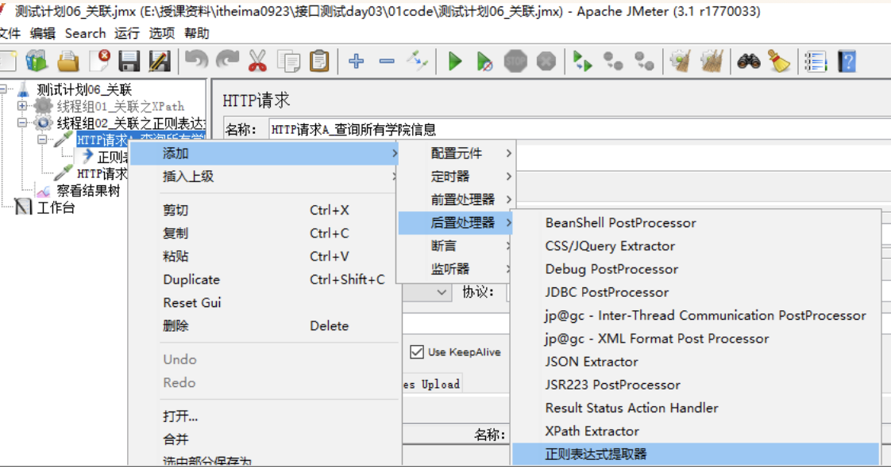
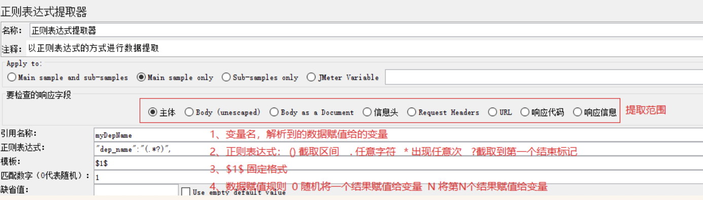
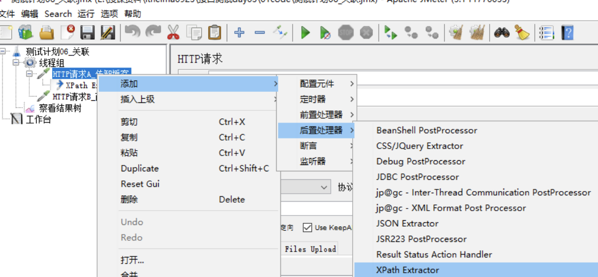

Jmeter 关联
目标
- 了解关联应用场景；
- 掌握正则表达式的作用和用法；
1. 需求
1. 对http://www.baidu.com进行2次访问；
2. 第一次获取title值，第二次把获取的值作为参数名(title)的参数值附加请求中。
1.1 问题
1. 如何从第一次请求获取的响应数据中提取title值？
2. 解决这种需求场景在测试领域中叫什么？
1.2 什么是关联？
概念：一个请求响应的结果要作为另一个请求提交的数据.
注意: 由第一个请求响应的结果,我们在第二次请求中使用, 我们会发现,关联是后置处理器的一部分.
1.3 Jmeter关联中常用的两种方式
1. 正则表达式提取器
2. XPath Extractor
2. 正则表达式提取器
概念：根据需求定制规则，返回匹配规则的数据的一种组件
2.1 实施方案分析
1. 测试计划->线程组
2. 线程组->HTTP请求(获取title)
3. 获取title->后置处理器->正则表示式提取器
4. 线程组->HTTP请求(使用title)
5. 测试计划->察看结果树
技术难点分析
1. 正则表达式
2.2 实施步骤
1. 创建测试计划、线程组、添加http请求
2. 添加正则表达式提取器


参数解释:
- 引用名称：下一个请求要引用的参数名称，如填写title，则可用${title}引用它。
- 正则表达式：制定规则的公式 公式模板：前缀识别()后缀识别 ()：括起来的部分就是要提取的数据。 1) .：匹配任何字符串。 2) +：一次或多次。 3) ?：在找到第一个匹配项后停止。 4) *：匹配规则内所有字符串
- 模板：$$格式；$1$表示解析到的第1个值；如果匹配有2个值，第二个值$2$，以此例推
- 匹配数字：1代表全部取值，0代表随机取值，通常情况下填1
3. 传值, 把第一个请求提取的值传给第二个请求, 格式是: ${变量名}
2.3 正则表达式提取器-总结
1. 位置
2. 引用名称
3. 正则表达式
4. 模板格式
5. 匹配数字
3. xpath Extractor(xpath 提取器)
一种可被用来提取页面给定内容的组件，主要采用的方式为XPath路径
3.1 解决方案分析
1. 测试计划->线程组
2. 线程组->HTTP请求(获取title)
3. 获取title->后置处理器->XPath Extractor
4. 线程组->HTTP请求(使用title)
5. 测试计划->察看结果树
实施难点分析
XPath 路径
3.2 实施步骤
1. 创建测试计划、线程组、htt请求
2. 添加xpath提取器


参数解释
1. Use Tidy?：当需要处理的页面是HTML格式时，必须选中该选项。
1) Tidy：一种HTML格式化模板
2. Reference Name：存放提取出的值的参数名称（被引用时使用）。
3. XPath Query：用于提取值的XPath表达式（跟学习WEB自动化使用XPath一样）。
3. 传值.将第一个请求xpath提取的数据传递给第二个请求,格式是:${变量名}
3.3 xpath提取器总结
1.xpath的使用
2.use tidy
4. 关联-总结：
正则表达式和xpath的区别
1. 正则表达式提取器可以用于对页面任何文本文档、标签文档的提取，提取的内容是根据正则表达式在页面内容中进行文本匹配；
2. XPath Extractor则可以提取返回页面任意标签元素的任意属性，如//a[@href="http://tieba.baidu.com"]/@name;
选择
1. 如果需要提取的文本是页面上某元素的属性值，建议使用XPath Extractor;
2. 如果需要提取的文本在页面上的位置不固定，或者不是元素的属性，建议使用正则表达式提取器。
注意事项:
关联中使用的正则表达式、xpath提取器是属于后者处理器的, 我们使用的是比较常用的.
更多请参考:后置处理器